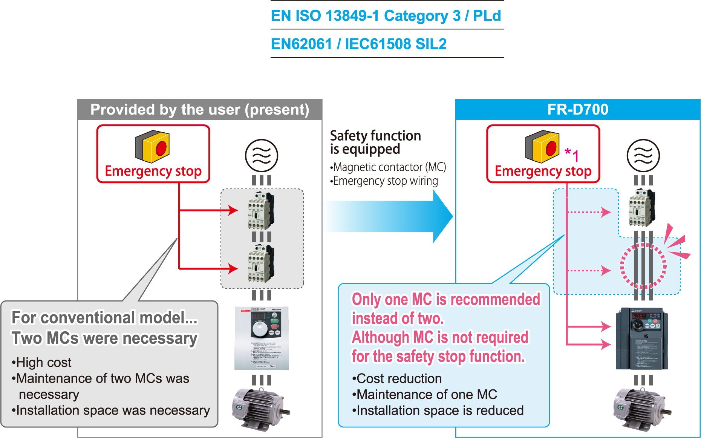
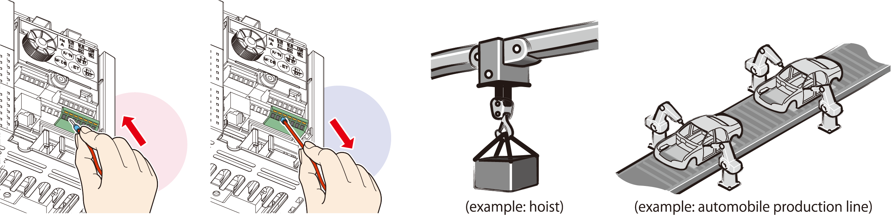
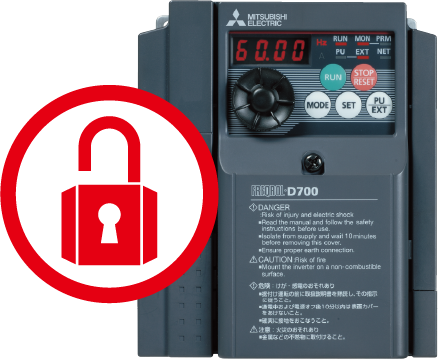

Inverters-FREQROL-D700 Series New standard of inverter

Safety stop function
The FR-D700 series is compliant to the EU Machinery Directive without the addition of previously required external devices.
Operation of an external Emergency Stop device results in a highly reliable immediate shutoff of the D700's output to the motor.
This safety stop function conforms to the following standards.

*1Approved safety relay unit
Spring clamp terminal (control circuit terminal)
With spring clamp terminals*2, the wiring became easier and more secure.
-
Easy wiring
Wiring is completed only by inserting wires treated with blade terminal (max. diameter 1.5mm)
Capable of wiring without a blade terminal. -
Highly reliable
Spring structure in terminal contact section inside prevents contact fault by vibration. -
Maintenance is unnecessary
Screw retightening is unnecessary.*2Main circuit terminal is screw terminal.

Long-life design
- The design life of the cooling fan has been extended to 10 years*3. The life of the fan can be further extended utilizing the it’s ON/OFF control.
- The design life of the capacitors has been extended to 10 years by the adoption of a capacitor endures 5000 hours at 105°C surrounding air temperature*3*4.
- Life indication of critical components
| Components | Guideline of the FR-D700 Life | Guideline of JEMA*5 |
|---|---|---|
| Cooling fan | 10 years | 2 to 3 years |
| Main circuit smoothing capacitor | 10 years | 5 years |
| Printed board smoothing capacitor | 10 years | 5 years |
- *3Surrounding air temperature : annual average 40°C (free from corrosive gas, flammable gas, oil mist, dust and dirt) Since the design life is a calculated value, it is not a guaranteed value.
- *4Output current : 80% of the inverter rated current
- *5Excerpts from "Periodic check of the transistorized inverter" of JEMA (Japan Electrical Manufacture's Association)
Leading life check function
- Degrees of deterioration of main circuit capacitor, control circuit capacitor, and inrush current limit circuit can be monitored.
- Trouble can be avoided with the self-diagnostic alarm*6 that is output when the life span is near.
- *6If any one of main circuit capacitor, control circuit capacitor, inrush current restriction circuit or cooling fan reaches the output level, an alarm is output. Capacity of the main circuit capacitor can be measured by setting parameter at a stop and turning the power from off to on.
Measuring the capacity enables alarm to be output.
The cooling fan outputs alarm by using fan speed detection.
Password function
Registering a 4-digit password can limit parameter read/write.
It is effective for parameter setting protection.
